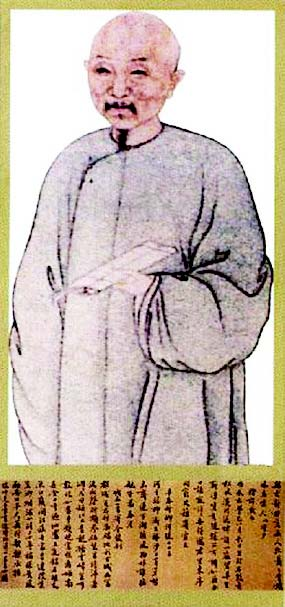
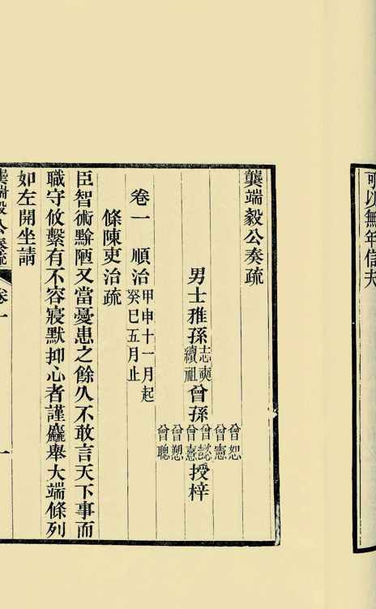
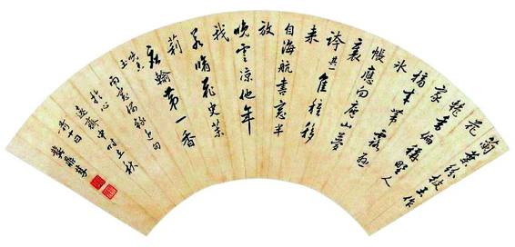
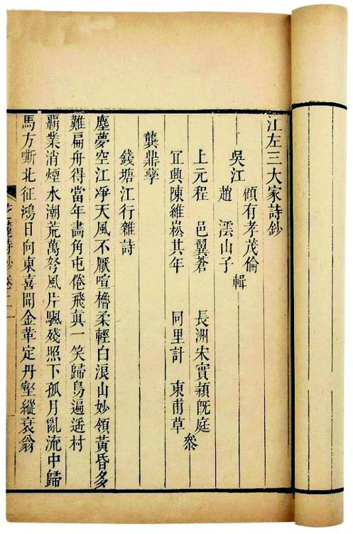

我倾向于把它看做陈述句。证据自然没有，但从情理角度品鉴，倘使此语之出，意在文过饰非，则如此鲜廉寡耻之言，效果只能适得其反。人的行为都出于自利，此为本能，即便给人定罪，也得推其合理动机——除非我们认为，龚鼎孳到处对人讲这句话，目的是要自增其丑。所以作为推理，我觉得他是在陈述什么。但事情本身太过离奇，超出“正常人”的心理和价值观之外，看上去反而像是狡辩和抵赖。
那么，横亘在龚鼎孳与我们这些“正常人”之间的障碍何在呢？显然是“小妾”。“小妾”者，旧时所谓侧室、小老婆，今之所谓“小三”、“小蜜”。在我们男权的视角下，或者是生育工具，或者是性特权，或者是私有财产，或者是花瓶、玩物，以至冶荡、恣欲、淫猥之类的表征。尤其这位“小妾”，就像马士英为了突显龚鼎孳的丑恶，马不停蹄地点到的，“其为科臣时收取秦淮娼妇也”。对这种“身份”，我们很难抱以尊重。我们或许也愿意与她们取乐，但绝不能在心理上给以接受，脑子里都免不了装着西门庆的那句口头禅“贼小淫妇儿”，贱之、蔑之。
我不知道龚鼎孳是否完全越出了男性的普遍心理。我能肯定的是：单就顾媚这特定对象而言，龚鼎孳没有西门庆意识；此时此刻从他嘴里说出的“小妾”一词，与“贼小淫妇儿”毫无关系。相反，他视她为生命中独一无二的女人，甚至喻以自己的“宓妃”。前面所引的《绮罗香》中“珥瑶碧、宓妃横浦”一句，径出《洛神赋》“珥瑶碧之华珺”，而曹植说：“斯水之神名曰宓妃”[45]。
龚以宓妃比顾媚，是把她摆到心中
女神的位置上。但同一个女人对于其他男人，却只是“贼小淫妇儿”。我们不能责怪大家何不与龚鼎孳一道，将某位妓女视为女神；然而，“子非鱼安知鱼之乐”，毕竟龚鼎孳自己有此感受，他也正是带着这种旁人所不知甚至不能理解的感受，说出了“我原要死，小妾不肯”那样骇世惊俗的话。这足令说者一副心肠，听者另一副心肠。在龚鼎孳，或许是掏心剖腹；旁人却一片哗然，以为人间丑秽无逾乎此。
这当中，显然有个巨大的落差。当事者本人，与社会舆论之间，视阈不同，处境不同，价值观更不同。
于是我们想到，有些历史公案，除开一眼可见的大伦大节，还隐藏着个体自我价值问题。大是大非面前，我们总是强调个体去承担对于社会整体的责任和义务，这并不错；但与此同时，个人心灵的安放是否全然不必予以考虑，却仁者见仁，智者见智。主流的态度，尤其历来中国的主流态度，置个人于无条件牺牲的位置。这样的习惯见解，至今我们仍没有多少动摇。但我们也通过与异质文化的接触，了解到有采取其他看法的可能。比如，在不伤害、损害社会整体利益前提下，对个体的苦衷持宽谅态度，从而在历史观和伦理观中，增加对个体的考虑。我们的社会，还不能普遍做到这样，但作为方向，一般都不否认那是更文明、更善意，也更利于历史进步的。我们曾经讨论过“杀降”的问题。古代世界一致认为投降乃极丑恶极可鄙的行为，不但本方所痛恨，即在敌方也视如草芥而往往大开杀戒。中国直到清末仍有此心态，李鸿章平苏州后，杀太平天国降军据说达二十万，以致他的盟友常胜军统帅戈登、英军驻华陆军司令柏朗等人怒不可遏，要求解除其苏抚之职，否则就要攻击淮军。[46]如今，对于战败而降，我们虽仍不能捐弃鄙视的心理，却至少在行动上接受了不得歧视俘虏的国际公约。这种不歧视的道理就在于，国家、民族整体利益的正当性，并不表现为对个人的无度索取。
这是我们和龚鼎孳时代的不同。当时他身为臣子，“不能为其主临危授命，辄复畏死倖生”，便是有罪，可以立断为失德之人。我们则不然。我们会问以下几个问题：他做到了什么？没做到什么？在没有做到的方面，原因是什么？可以为常理所接受，还是不可接受？当问题来到这些层面，只停留在某些抽象义理上，我们所见将不比乾隆皇帝更多。对历史当事人来说，生活与生命，每一步、每个瞬间都是具体的。他们从有血有肉、活生生的体验中，获得认识、感受和价值。在龚鼎孳而言，能否“为国难舍小妾”，并非道义箴规那样明了易断，而要面对唯个人所自知、亦唯个人才承担的处境。为此，我们在对龚鼎孳人格高卑做出评判前，最好先探一探龚、顾关系的始末。

龚鼎孳小像
着便服、持书卷，如同一位布衣。他让人给自己留下这样一幅小像，应非无意。

龚鼎孳奏疏
崇祯间，龚鼎孳官居言路，曾“一月中，疏凡十七上”，表现非常抢眼。这是龚氏后人编刻的入清后的奏疏集。

龚鼎孳扇面
是他从近作中摘出的几句诗。书斋名“心远斋”，应出陶渊明诗句：“结庐在人境, 而无车马喧。问君何能尔，心远地自偏。”

《江左三大家诗钞》
钱谦益、吴伟业、龚鼎孳并称清初诗坛“江左三大家”。他们彼此是要好的朋友，另外还有一共同点：都有“贰臣”的身份。